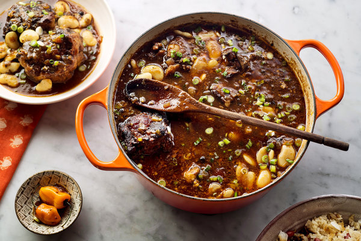

Jamaican Ox Tails
By: Elijah Gilead
This Jamaican Oxtails Recipe is fall off the bone tender and full of
amazing flavor. It can be made in about an hour with your pressure
cooker or cook it low and slow in a slow cooker.

Back to home Page!
Here is a midwinter cook-up of deep fragrance and lingering heat, a
trade-wind stew that emerged in Jamaica and made its way north. It is
oxtail stew, brown and steaming, light with ginger and thyme, pungent
with allspice and soy, a taste of the Caribbean to warm winter's heart.
You could make and eat it today while reading Derek Walcott poems as the
afternoon vagues into indigo — or allow it to cure into greater
magnificence overnight, and stretch out its gravy for the course of a
week.
Ingredients
- 3 pounds oxtails cut into segments by a butcher
- Kosher salt
- freshly ground black pepper, to taste
- 3 tablespoons light brown sugar
- 2 Spanish onions, peeled and chopped
- 4 cloves garlic, peeled and minced
- 3 tablespoons fresh ginger, peeled and chopped
- 1 Scotch bonnet pepper, whole
- 3 sprigs fresh thyme
- 12 allspice berries
- 1 bunch scallions, trimmed and chopped
- 3 tablespoons soy sauce
- 1 tablespoon Worcestershire sauce
- 3 tablespoons flour
-
1 cup butter beans, or a 10 1/2-ounce can butter beans, rinsed and
drained
Fresh Groceries from your local Walmart!
Steps
-
Season oxtails aggressively with salt and pepper. Heat a large Dutch
oven or a heavy-bottomed pot over high heat. Add brown sugar to pot
and melt, stirring with a wooden spoon, until it darkens and starts to
smoke — about six minutes. When sugar is nearly black, add 2
tablespoons boiling water. (It will splatter.) Stir to mix.
-
Add the oxtails to the pot, working in batches, stirring each time to
cover them with blackened sugar, then allowing them to cook, turning
occasionally, until they are well browned. Remove oxtails to a bowl
and keep warm.
-
Add half of the onions, garlic and ginger to the pot, along with the
pepper, the thyme, the allspice and a third of the scallions, and stir
to combine. Allow to cook until softened, approximately 5 minutes.
-
Return the oxtails to the pot along with any accumulated juices and
put water into the pot so that the oxtails are almost submerged. Bring
to a simmer and then cook, covered, approximately 1 hour, stirring
occasionally.
-
Add remaining onions, garlic and ginger to the pot, along with another
third of the scallions. Add sugar, soy sauce and Worcestershire sauce.
Stir to combine and continue to cook until the meat is yielding and
loose on the bone, approximately one hour longer. Remove approximately
one cup of liquid from pot and place in a small bowl. Add flour to
this liquid and stir to combine, working out any lumps with the back
of a spoon. Add this slurry to the pot along with ketchup, then stir
to combine and allow to cook a further 15 minutes or so. Remove Scotch
bonnet pepper and thyme stems. Fold butter beans into the stew and
allow these to heat through. Scatter remaining scallions over the top.
Serve with white rice or rice and peas.